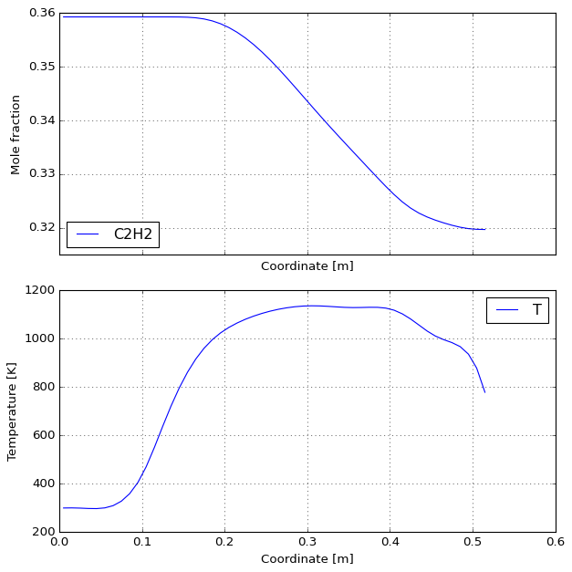
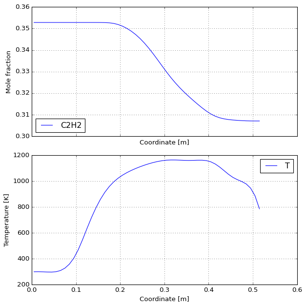

Acetylene pyrolysis#
[1]:
%load_ext autoreload
%autoreload 2
[2]:
%load_ext majordome.skipper
[3]:
from majordome import (
NormalFlowRate,
PlugFlowChainCantera,
get_reactor_data,
)
from scipy.interpolate import CubicSpline
import os
import cantera as ct
import numpy as np
import pandas as pd
[4]:
ct.suppress_thermo_warnings(suppress=True)
os.environ["MJ_SOLVE_FINEST"] = "true"
Toolbox#
[5]:
class TubularReactor:
""" Provides the discretization of a tubular reactor. """
def __init__(self, L=0.52, D=0.028, d=0.01):
self.D = D
self.A_cell = d * np.pi * D
self.V_cell = d * np.pi * (D/2)**2
self.z = np.arange(d/2, L-d/2+0.1*d, d)
self.V = np.full_like(self.z, self.V_cell)
[6]:
def mass_flow_rate(mechanism, X, qdot, verbose):
""" Evaluate mass flow rate from mechanism [kg/s]. """
nfr = NormalFlowRate(mechanism, X=X)
if verbose:
print(nfr.report(qdot=qdot))
return nfr(qdot)
[7]:
def initial_mixture(sol, fraction):
""" Compute mixture accounting for imputiries. """
if "CH3COCH3" in sol.species_names:
X = {"C2H2" : 0.980 * fraction,
"CH4" : 0.002 * fraction,
"CH3COCH3" : 0.018 * fraction}
else:
X = {"C2H2" : 0.998 * fraction,
"CH4" : 0.002 * fraction}
X["N2"] = 1.0 - sum(X.values())
return X
[8]:
def global_htc(reactor, sol, Nu):
""" Evaluate global heat transfer coefficient. """
try:
k = sol.thermal_conductivity
except:
k = 0.025 # Norinaga lacks transport!
return reactor.A_cell * Nu * k / reactor.D
[9]:
def solve(mechanism, fraction, qdot, P, T_wall, *, T_env=298.15,
K=0.01, Nu=3.66, verbose=False, **kwargs):
""" Integrate reactor model with given operating conditions. """
# -- HANDLE UNITS
P *= 100 # hPa to Pa
qdot *= 1.0e-06 * 60 # SCCM to Nm³/h
# -- CREATE PROBLEM
reactor = TubularReactor()
sol = ct.Solution(mechanism)
sol.TPX = T_env, P, initial_mixture(sol, fraction)
mdot = mass_flow_rate(mechanism, sol.X, qdot, verbose)
apfr = PlugFlowChainCantera(sol.source, sol.name, reactor.z,
reactor.V, P=sol.P, K=K)
## -- SETUP CONDITIONS
sources = get_reactor_data(apfr)
sources.m[0] = mdot
sources.h[0] = sol.h
sources.Y[0, :] = sol.Y
sources.Q[:] = 0
## -- REGISTER HEAT TRASNFER
def heat_flow(i, T):
U = global_htc(reactor, sol, Nu)
Q = -U * (T - T_wall(reactor.z[i]))
return Q
apfr.register_heat_flow(heat_flow)
## -- SOLVE AND PROCESS
apfr.update(sources)
cols = kwargs.get("cols", ["z_cell", "Q_cell", "T", "X"])
data = apfr.states.to_pandas(cols=cols)
return apfr, data
[10]:
def plot_reactor(apfr):
config = dict(selected=["C2H2"], y_label="Mole fraction",
composition_variable="X")
plot = apfr.quick_plot(**config)
plot.axes[0].legend(loc=3)
[11]:
MECHS = ["c2h2/dalmazsi-2017.yaml",
"c2h2/graf-2007.yaml",
"c2h2/norinaga-2009.yaml"]
PROFILES = pd.DataFrame({
"z": [ 0.00, 0.05, 0.10, 0.12, 0.15, 0.20, 0.25,
0.30, 0.35, 0.40, 0.45, 0.50, 0.52 ],
"773": [ 298.0, 303.0, 330.0, 400.0, 650.0, 750.0, 762.0,
763.0, 763.0, 763.0, 582.0, 440.0, 400.0 ],
"873": [ 298.0, 299.0, 360.0, 503.0, 757.0, 834.0, 850.0,
869.0, 859.0, 849.0, 698.0, 546.0, 400.0 ],
"973": [ 298.0, 299.0, 420.0, 653.0, 873.0, 918.0, 949.0,
971.0, 954.0, 937.0, 780.0, 623.0, 400.0 ],
"1023": [ 298.0, 299.0, 550.0, 689.0, 896.0, 965.0, 1001.0,
1018.0, 1001.0, 984.0, 837.0, 690.0, 400.0 ],
"1073": [ 298.0, 299.0, 550.0, 726.0, 919.0, 1013.0, 1052.0,
1064.0, 1048.0, 1031.0, 894.0, 757.0, 400.0 ],
"1123": [ 298.0, 299.0, 550.0, 755.0, 959.0, 1057.0, 1098.0,
1110.0, 1095.0, 1080.0, 931.0, 782.0, 400.0 ],
"1173": [ 298.0, 299.0, 550.0, 783.0, 1000.0, 1101.0, 1143.0,
1156.0, 1143.0, 1129.0, 968.0, 806.0, 400.0 ],
"1223": [ 298.0, 299.0, 550.0, 793.0, 1048.0, 1151.0, 1189.0,
1205.0, 1189.0, 1172.0, 991.0, 809.0, 400.0 ],
"1273": [ 298.0, 299.0, 550.0, 803.0, 1095.0, 1200.0, 1235.0,
1253.0, 1234.0, 1214.0, 1013.0, 811.0, 400.0 ],
})
Reference case#
[12]:
%%skipper MJ_SOLVE_FINEST
%%time
results, df = solve(MECHS[2], fraction=0.36, qdot=222, P=50,
T_wall=CubicSpline(PROFILES["z"], PROFILES["1173"]))
plot_reactor(results)
Skipping cell: MJ_SOLVE_FINEST=True
[13]:
%%time
results, df = solve(MECHS[1], fraction=0.36, qdot=222, P=50,
T_wall=CubicSpline(PROFILES["z"], PROFILES["1173"]))
plot_reactor(results)
CPU times: user 658 ms, sys: 7.15 ms, total: 665 ms
Wall time: 662 ms

[14]:
%%time
results, df = solve(MECHS[0], fraction=0.36, qdot=222, P=50,
T_wall=CubicSpline(PROFILES["z"], PROFILES["1173"]))
plot_reactor(results)
CPU times: user 1.63 s, sys: 20.4 ms, total: 1.65 s
Wall time: 1.63 s

Scan table#
[15]:
TABLE5_9 = [
dict(N= 1, P= 50, Q=222, T= 773, X_meas=0.352),
dict(N= 2, P= 50, Q=222, T= 873, X_meas=0.364),
dict(N= 3, P= 50, Q=222, T= 973, X_meas=0.364),
dict(N= 4, P= 50, Q=222, T=1073, X_meas=0.346),
dict(N= 5, P= 50, Q=222, T=1123, X_meas=0.312),
dict(N= 6, P= 50, Q=222, T=1173, X_meas=0.307),
dict(N= 7, P= 50, Q=222, T=1273, X_meas=0.288),
dict(N= 8, P= 30, Q=222, T=1173, X_meas=0.323),
dict(N= 9, P= 30, Q=222, T=1223, X_meas=0.314),
dict(N=10, P=100, Q=222, T=1173, X_meas=0.249),
dict(N=11, P=100, Q=222, T=1223, X_meas=0.226),
dict(N=12, P=100, Q=222, T=1273, X_meas=0.201),
dict(N=13, P=100, Q=378, T=1023, X_meas=0.343),
dict(N=14, P=100, Q=378, T=1123, X_meas=0.298),
]
[16]:
def scan_with_mech(mech):
table = TABLE5_9.copy()
for k, row in enumerate(TABLE5_9):
print(f"Working on case no. {k+1}")
T_name = str(int(row["T"]))
_, df = solve(mech, fraction=0.36, qdot=row["Q"], P=row["P"],
T_wall=CubicSpline(PROFILES["z"], PROFILES[T_name]))
table[k]["X_calc"] = float(df["X_C2H2"].iloc[-1])
return pd.DataFrame(table)
[17]:
def run_mech(mech, df=None):
name = mech.split("/")[1].split(".")[0].replace("-", "_")
x_name, e_name = f"X_{name}", f"err_{name}"
scan = scan_with_mech(mech).rename(columns={"X_calc": x_name})
if df is None:
df = scan
df[e_name] = 100 * (scan[x_name] / scan["X_meas"] - 1)
return df
[18]:
%%time
df = run_mech(MECHS[0], df=None)
Working on case no. 1
Working on case no. 2
Working on case no. 3
Working on case no. 4
Working on case no. 5
Working on case no. 6
Working on case no. 7
Working on case no. 8
Working on case no. 9
Working on case no. 10
Working on case no. 11
Working on case no. 12
Working on case no. 13
Working on case no. 14
CPU times: user 22.1 s, sys: 171 ms, total: 22.3 s
Wall time: 22.2 s
[19]:
%%time
df = run_mech(MECHS[1], df=df)
Working on case no. 1
Working on case no. 2
Working on case no. 3
Working on case no. 4
Working on case no. 5
Working on case no. 6
Working on case no. 7
Working on case no. 8
Working on case no. 9
Working on case no. 10
Working on case no. 11
Working on case no. 12
Working on case no. 13
Working on case no. 14
CPU times: user 8.59 s, sys: 231 ms, total: 8.83 s
Wall time: 8.57 s
[20]:
%%skipper MJ_SOLVE_FINEST
%%time
df = run_mech(MECHS[2], df=df)
Skipping cell: MJ_SOLVE_FINEST=True
[21]:
df
[21]:
| N | P | Q | T | X_meas | X_dalmazsi_2017 | err_dalmazsi_2017 | err_graf_2007 | |
|---|---|---|---|---|---|---|---|---|
| 0 | 1 | 50 | 222 | 773 | 0.352 | 0.352786 | 0.223212 | 2.032933 |
| 1 | 2 | 50 | 222 | 873 | 0.364 | 0.352540 | -3.148330 | -1.550413 |
| 2 | 3 | 50 | 222 | 973 | 0.364 | 0.350258 | -3.775208 | -2.602299 |
| 3 | 4 | 50 | 222 | 1073 | 0.346 | 0.339812 | -1.788298 | -1.188026 |
| 4 | 5 | 50 | 222 | 1123 | 0.312 | 0.326556 | 4.665512 | 6.179187 |
| 5 | 6 | 50 | 222 | 1173 | 0.307 | 0.307034 | 0.010994 | 4.120820 |
| 6 | 7 | 50 | 222 | 1273 | 0.288 | 0.290866 | 0.995060 | 6.743916 |
| 7 | 8 | 30 | 222 | 1173 | 0.323 | 0.329143 | 1.901911 | 5.859843 |
| 8 | 9 | 30 | 222 | 1223 | 0.314 | 0.318436 | 1.412680 | 7.828360 |
| 9 | 10 | 100 | 222 | 1173 | 0.249 | 0.242491 | -2.613868 | 4.125649 |
| 10 | 11 | 100 | 222 | 1223 | 0.226 | 0.230372 | 1.934472 | 5.944962 |
| 11 | 12 | 100 | 222 | 1273 | 0.201 | 0.221251 | 10.075293 | 12.714431 |
| 12 | 13 | 100 | 378 | 1023 | 0.343 | 0.342777 | -0.065090 | 0.254930 |
| 13 | 14 | 100 | 378 | 1123 | 0.298 | 0.305793 | 2.615003 | 6.255879 |
[22]:
error_cols = [c for c in df.columns if c.startswith("err")]
rmse_frame = np.sqrt((df[error_cols]**2).mean())
pd.DataFrame(rmse_frame).T
[22]:
| err_dalmazsi_2017 | err_graf_2007 | |
|---|---|---|
| 0 | 3.53261 | 5.758262 |